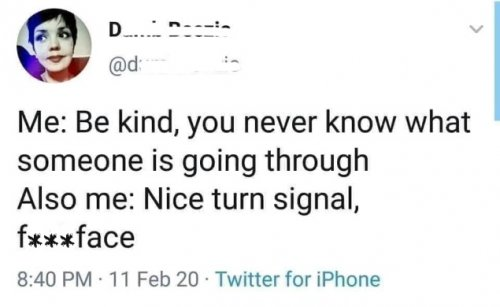
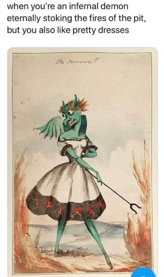

Who? Me?
This was certainly not how I saw my self. It was not how my mother saw me either. We both knew me to be loud, smart-alecky, and obnoxious. I mean, adorable of course, but still...
Which is perhaps why mom suggested that I be a little more like that at home.
And now today, at the ripe old age of (*cough), well, those personality styles seem to have reversed. Friends today know me as effusive, loud and goofy in person. Alone at home, I’m hunkered down and still.
Which is the true authentic me?
I mean, surely there is one. Surely there is one true one of all of us. And whichever of our many facets is the authentic one, aren't we supposed to be that, consistently and all the time?
But... "authentic me" changes regularly depending on context.
So looks like we can add “bad” and “wrong” to the list of applicable personality traits.
Weird. I mean, how many mes are there?
Oh mighty astrology chart, Myers Briggs, Enneagram, therapist, or inquiry, tell us who we are. Tell us over an dover, all about our selves and our personalities.
It feels important.
So it's surprising that with all this scrutiny, most of us haven’t noticed that we have to turn to outside our self, out towards others’ opinions and personality tests, in order to be able to shine that mirror back, on us.
Teachers report what they see. Mothers tell us what they see. Myers Briggs tells us what it sees.
These are views of us. They're not actually us.
And then based on that viewing input, ignoring all the contradictions and don’t-go-togethers, a story gets sewn together about each individual's personality.
Description of identity and personality is dependent on the outside world. Otherwise there's zero basis for defining what we are.
We cannot see ourselves without that input.
Which makes us a reflection. Of them, not us. Because it’s their mirror, not ours.
Not that that detail stops us from trying to claim ownership. After all, we all know it’s our personality.
MINE. My personality.
Personality is the personal property of….well, what?
Who and where is this owner of us and “ours”? What makes this collection of attributes mine?
That ownership indicates distance, space, between the thing that is owned- the personality- and the owners- us.
“This is mine” indicates we are not this.
So what are we then?
I mean, even if we're a reflected image, where’s the original that’s being reflected? Let's get a look at that baby.
Seems it can’t be done.
And yet for everyone, no matter how enlightened, the sense of being a distinctive person with a unique combination of attributes carries on regardless.
I mean, even Adya has a personality. Krishnamurti, Parsons, Watts, Spira… no one would mix them up, confuse them for each other. Their unique collection of characteristics continues.
Personality describes A Person. Since that isn’t real, we have to depend on description to make it seem like a thing.
Which is why, whatever those identifying characteristics may be for each of us, they or some other replacing traits, will continue. They're not going anywhere.
Despite all those spiritual admonitions about ego and personality having to “die before you die.”
The thing is, what needs personality gone, anyway? What benefit would there be to excluding it, or to making vanish, even if that was possible?
Maybe we don’t have to try so hard to get rid of, or transcend, or transform personality.
Maybe we can be free of shoulds and wagging fingers enough to be allow our selves to be whimsical, changing, arbitrary, contradictory, difficult and unreasonable. Without constant monitoring, correcting, and polishing.
Maybe we can just leave it alone and finally just have fun with playacting, dressing up, and costume makeup instead.
Because if we’re going to spend so much time “seeing ourselves”, we may as well enjoy the play or film.
Since whatever watches has no personality, no ego, no mind, and no body of its own.
So it very well may enjoy the hell out of ours.
“Hey kids, come on! Movie’s on!”
What entertainment. What variety. What ingenuity.
What a fun
and fascinating
show.
Click here to get your every week.
"You have a nice personality, but not for a human being." --Henny Youngman

